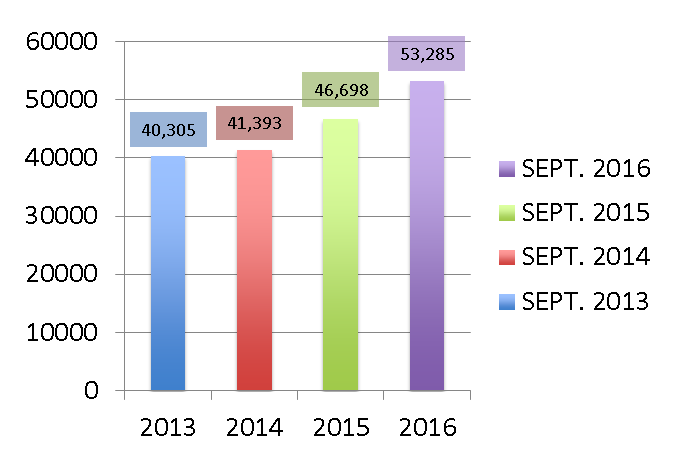

En 2016 Torreón ha aumentado su conectividad aérea abriendo ocho nuevos vuelos a diversos destinos con la llegada de la aerolínea TAR; el vuelo de Volaris a la Ciudad de México y la reapertura del vuelo a Monterrey con Aeroméxico. Además, el tráfico aéreo de pasajeros ha ido en aumento. En el año 2015 se registró un tráfico de 556 mil 449 pasajeros, con un incremento de 6.2% en comparación al año anterior.
Los nuevos destinos con los que cuenta Torreón a partir del año 2015, son: Tijuana y Guadalajara con Volaris; León, Ciudad Juárez, Querétaro, Chihuahua, Hermosillo y Mazatlán con aerolíneas TAR.
De acuerdo con el director de Desarrollo Económico de Torreón, Jaime Russek Fernández, con la conectividad aérea se contribuye a elevar los índices de competitividad que miden instituciones como el IMCO (Instituto Mexicano para la Competitividad) además de con ello generar un mayor intercambio comercial con destinos que los empresarios Laguneros han estado demandando.
Indicó que varios empresarios solicitaron conectividad con Ciudad Juárez, Tijuana y el Bajío por una diversidad de actividades económicas que se están presentando, entre ellas, las generadas por la industria automotriz.
Asimismo la recuperación del vuelo a Monterrey era una demanda del gremio de los negocios en la ciudad, agregó Jaime Russek. Este vuelo permite conectar con más de 18 destinos y además se puede ir y regresar en el mismo día. A esto hay que agregar que Monterrey es el segundo hub (centro de conexión) más importante a nivel nacional por lo que es importante la conexión directa y en el horario nuevo establecido.
La Dirección de Promoción de Inversiones informó que se abrió recientemente una oficina de promoción de Torreón y del Estado de Coahuila junto con la Secretaría de Desarrollo Económico, Competitividad y Turismo en el Corporativo Cintermex, de la ciudad de Monterrey. Lugar donde se busca crear más vínculos empresariales y expandir los alcances de promoción de la ciudad; como parte de los objetivos, será el difundir el vuelo Torreón – Monterrey atrayendo así más visitantes a la Comarca.
En aumento desde 2014
En un comparativo realizado por Desarrollo Económico de Torreón, en el año 2013 Torreón sólo contaba con tres tres aerolíneas y destinos nacionales: Chihuahua, Guadalajara y Ciudad de México además de dos internacionales.
La conectividad aérea se ha ido recuperando, en opinión de Jaime Russek, gracias al impulso y crecimiento económico que se ha dado en la ciudad, así como al trabajo en equipo de promoción con el Gobierno Estatal y Municipal, la Oficina de Convenciones y Visitantes (OCV´s), las Cámaras empresariales y en general la Iniciativa Privada que ha estado participando y solicitando se incrementen los destinos desde Torreón, que hoy por hoy sigue siendo una ciudad con un fuerte turismo de negocios. Esto ha dado como resultado una ocupación hotelera récord en lo que va del año, agregó.
Hasta septiembre de 2016, el tráfico de pasajeros en Torreón ha sido de 473,093 personas de acuerdo con Operadora Mexicana de Aeropuertos (OMA): www.oma.aero. Los meses con mayor flujo han sido: julio y agosto con 61, 928 y 59,501 pasajeros respectivamente. Los pasajeros nacionales este año han sumado 431, 865 y los internacionales 41, 228 personas.
Operadora Mexicana de Aeropuertos ha cumplido 15 años de operaciones con un total de 13 aeropuertos en el país. En su informe 2015, recientemente presentado en Torreón, dio a conocer que el año pasado se ha transportado a más de 16 millones de pasajeros, presentando un incremento de 15.16% con respecto al año anterior.
Durante ese informe se destacó que Torreón se ubica en el ranking número 1 a nivel estatal con una participación de 85.7% de tráfico aéreo.
En un comparativo con el año 2013, la tendencia de aumento de pasajeros en Torreón se ha ido incrementando, alcanzando en el año 2016 un 32 % más de tráfico aéreo hasta el mes de septiembre, lo que se traduce a más de 12,000 pasajeros que actualmente utilizan el aeropuerto de Torreón para trasladarse a y desde otras ciudades, haciendo del año 2016, uno de los de mayor apertura de destinos en la historia de la ciudad.
Comparativo en el tráfico aéreo en Torreón de 2013 a 2016
